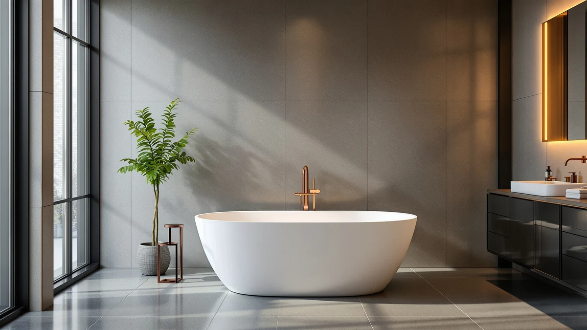

Quick Answer
This FerdY 67" Bali Acrylic review compares its $1,049.99 price against three other 67-inch acrylic freestanding tubs that sell for $785.24 to $845.99. The FerdY carries the highest price of the four, and its own specs table leaves the shell material blank where a close rival names its construction directly, so the premium here rests on the Bali design and the FerdY name rather than a documented spec advantage. If that design is what your bathroom needs, the price is easier to accept.
Our pick: FerdY 67" Bali Acrylic Freestanding, $1,049.99 Check Price on Amazon
Things to Know Before You Buy
- This FerdY 67" Bali Acrylic review compares the FerdY against three close 67-inch acrylic freestanding tubs on price, brand, and documented specs.
- At $1,049.99, it's the most expensive tub in this comparison, running $204.00 to $264.75 more than the Mokleba, EliteEdge, and WOODBRIDGE alternatives covered below.
- The specs table for this listing does not name the shell material, while the Mokleba alternative states its lucite acrylic construction outright.
- All four tubs in this comparison share the same 67-inch length, so length alone will not settle the decision between them.
- The curved Bali design is the clearest visual difference between the FerdY and the more standard-looking shells sold under the other three names.
- Freestanding tubs like this one leave supply and drain lines exposed, so measure your rough-in before ordering rather than assuming it matches an old alcove tub.
This FerdY 67" Bali Acrylic review breaks down whether the $1,049.99 price tag is worth paying when three other 67-inch acrylic freestanding tubs sell for $785.24 to $845.99. FerdY's Bali line pairs a curved, freestanding acrylic shell with the 67-inch length that fits many standard rough-ins, and the brand's own name recognition is part of what you pay for here. Before you check out at over a thousand dollars, it helps to see exactly what that premium buys and what it does not. We put the FerdY side by side with the Mokleba, EliteEdge, and WOODBRIDGE alternatives to find out.
We compared the FerdY against three alternatives that share its 67-inch length: the Mokleba 67" Lucite Acrylic, the EliteEdge-made Freestanding Bathtub 67 Inch Acrylic, and the WOODBRIDGE 67" Acrylic Freestanding Bathtub. Each one undercuts the FerdY by at least $204.00, and the Mokleba names its shell material outright where the FerdY's own listing leaves that field blank. That gap matters if you are choosing on documentation as much as on brand, and it shapes most of the tradeoffs covered in this FerdY 67" Bali Acrylic review.
Why You Should Trust Us
Ilane Tall covers freestanding tubs and bathroom fixtures for this site, from budget acrylic soakers under $800 to premium models that cost several times more. For this FerdY 67" Bali Acrylic review, we compared FerdY's published listing details against three close alternatives, cross-checked current Amazon pricing across all four tubs, and weighed what each listing does and does not disclose before you buy.
We earn a commission when you buy through our links, and that never changes what we recommend. When a tub costs hundreds more without a documented reason, like the FerdY does here, we say so directly instead of glossing over it, and we point you toward the cheaper alternative when the numbers support it.
Our Research Process
Our research process for this FerdY 67" Bali Acrylic review started with the numbers every buyer can verify independently: current Amazon pricing, the length listed for each tub, and what each brand's page discloses about materials. FerdY's Bali listing gives us the 67-inch size and the acrylic construction implied by the product name, but the specs table itself leaves the material field blank, so we treated that gap as a data point rather than an assumption in either direction.
We also compared documentation across the four listings side by side. The Mokleba alternative names its lucite acrylic shell directly, which let us see exactly where the FerdY's page is thinner on detail. That kind of documentation matters when you're paying a four-figure price, so we weighed its absence here as a legitimate mark against the FerdY rather than a neutral detail we could wave off.
Finally, we lined up pricing across all four tubs at the same point in time so the dollar comparisons in this FerdY 67" Bali Acrylic review reflect what shoppers actually see at checkout, not list prices that may have since changed. Price against documentation is the same tradeoff most buyers in this size bracket end up weighing, and it's the lens we used here.
Overview & Specs

FerdY 67" Bali Acrylic Freestanding
What we like
- The curved Bali design gives the shell a distinct silhouette that stands out among the more standard-looking alternatives in this comparison
- Matches the 67-inch length of all three alternatives, so it fits the same rough-in and floor space many standard freestanding installs are already plumbed for
- Comes from FerdY, a brand with its own dedicated freestanding tub lineup rather than a generic reseller listing
Flaws but not dealbreakers
- At $1,049.99, it costs $204.00 to $264.75 more than the three alternatives below, all of which share its 67-inch length
- The specs table does not name the shell material outright, unlike the Mokleba alternative, which states its lucite acrylic construction directly
- Freestanding tubs like this one leave supply and drain lines exposed, so measure your rough-in before ordering rather than assuming it matches an old alcove tub
| Material | — |
| Size | Bali 67" |
The FerdY 67" Bali Acrylic Freestanding builds its case on design and brand rather than a standout spec. At 67 inches long, it shares its footprint with all three alternatives covered later in this FerdY 67" Bali Acrylic review, and the curved Bali profile gives it a distinct look next to the more standard shells sold under the Mokleba, EliteEdge, and WOODBRIDGE names. At $1,049.99, it sits well above every other tub in this comparison, and that gap is the central question this review answers.
What the listing doesn't do is spell out the shell material the way the Mokleba alternative does. You pay at least $204.00 more for a tub of the same length, without a documented reason for the difference beyond the Bali design and the FerdY name. That makes this model a reasonable choice if the look and the brand matter more to you than price and documentation, but a harder sell if you are comparing purely on verifiable specs across all four listings.
What We Liked
Design is the strongest point in this FerdY 67" Bali Acrylic review. The curved Bali silhouette sets it apart from the three more standard-looking alternatives compared here, and if that look is what your bathroom needs, none of the cheaper options matches it exactly.
The 67-inch length also works in its favor. It matches the Mokleba, EliteEdge, and WOODBRIDGE alternatives exactly, so if your bathroom's rough-in was measured for a 67-inch freestanding tub, the FerdY drops into that same space without extra plumbing work.
Buying from FerdY also means buying from a brand with its own dedicated freestanding tub lineup rather than a one-off listing, which gives you at least one other data point if you ever compare this model against FerdY's other sizes.
What Could Be Better
Price is the clearest drawback. At $1,049.99, this tub costs $204.00 more than the Mokleba, $250.00 more than the EliteEdge-made alternative, and $264.75 more than the WOODBRIDGE, and none of those three is a different brand tier in terms of documented materials. That premium is harder to justify on paper when the current listing gives buyers little else to point to beyond the Bali design.
Documentation is the other gap. The specs table for this listing doesn't name a shell material, while the Mokleba alternative states its lucite acrylic construction directly. If you are the kind of buyer who wants every spec confirmed before ordering, that missing line is worth a message to the seller before you check out, and it is a reasonable reason to hold off if the seller cannot answer quickly.
Who Is It For?
This tub makes sense if the Bali design is non-negotiable for your bathroom and you would rather pay for a distinct look than shop the more generic alternatives. It also suits a buyer who has already measured for a 67-inch freestanding tub and wants the FerdY name specifically, regardless of the premium.
Skip it if price and documentation matter more to you than the design. The Mokleba, EliteEdge, and WOODBRIDGE alternatives covered below all match this tub's 67-inch length, cost $200.00 to $265.00 less, and at least one names its shell material outright, making any of them a harder-to-beat option for most budgets.
Alternatives to Consider
If the FerdY 67" Bali Acrylic's price rules it out, the other three tubs in this comparison each undercut it by $200.00 or more while matching its 67-inch length, and one of them documents its shell material where the FerdY's listing does not.

Editor's Pick
Mokleba 67" Lucite Acrylic Freestanding
The Mokleba is the only tub in this comparison whose listing names its shell material outright, lucite acrylic, where the FerdY's page leaves that field blank. At $845.99 it also undercuts the FerdY by $204.00 while matching its 67-inch length exactly. For a shopper who wants the same footprint with clearer documentation and a lower price than the FerdY 67" Bali Acrylic, the Mokleba is worth a look.
$845.99
Check Price on Amazon
Best Value
Freestanding Bathtub 67 Inch Acrylic
This EliteEdge-made 67-inch acrylic tub costs $799.99, a full $250.00 less than the FerdY 67" Bali Acrylic, while matching its length exactly. The listing doesn't carry the same named design line as FerdY's Bali model, so weigh that tradeoff against the savings if a distinct silhouette matters to your purchase. For a shopper who wants the same footprint for less and isn't set on a specific design line, this is worth a look.
$799.99
Check Price on Amazon
Premium Choice
WOODBRIDGE 67" Acrylic Freestanding Bathtub
The WOODBRIDGE is the least expensive tub in this comparison at $785.24, undercutting the FerdY 67" Bali Acrylic by $264.75 while matching its 67-inch length. It comes from an established freestanding tub brand with its own broader lineup, so it's a reasonable choice if you want the lowest price here without stepping down to an unfamiliar manufacturer.
$785.24
Check Price on AmazonFrequently Asked Questions
How big is the FerdY 67" Bali Acrylic tub?
The FerdY 67" Bali Acrylic measures 67 inches, the same length as the Mokleba, EliteEdge, and WOODBRIDGE alternatives in this comparison. The listing does not publish gallon capacity or depth figures, so confirm those measurements with the seller if your bathroom has tight clearances.
Is the FerdY 67" Bali Acrylic worth the extra cost over the alternatives?
At $1,049.99 it costs $204.00 to $264.75 more than the three alternatives in this comparison. The premium mainly buys the Bali design and the FerdY name rather than any documented upgrade in material or capacity, so budget-focused shoppers may prefer one of the cheaper alternatives instead.
What is the difference between the FerdY 67" Bali Acrylic and the Mokleba 67" Lucite Acrylic?
Both share the same 67-inch length, but the Mokleba names its lucite acrylic shell directly in the listing and costs $204.00 less at $845.99. If the two are otherwise comparable for your bathroom, the Mokleba is the better-documented, lower-priced choice.
Final Verdict
This FerdY 67" Bali Acrylic review comes down to a simple tradeoff: the FerdY gives you a 67-inch acrylic freestanding tub with a distinct curved design from a dedicated tub brand, but it costs $204.00 to $264.75 more than three close alternatives without a documented spec to justify the gap. If the Bali design is what your bathroom needs, it's a reasonable buy backed by FerdY's own lineup. If price and documentation matter more, the Mokleba 67" Lucite Acrylic covered above matches its length for $204.00 less and names its shell material where the FerdY does not.